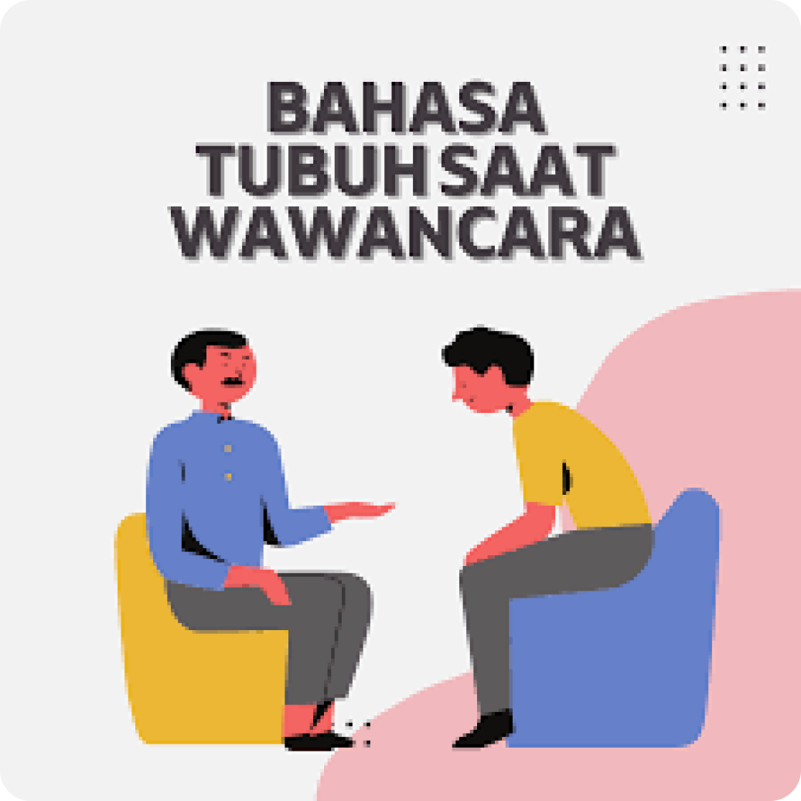
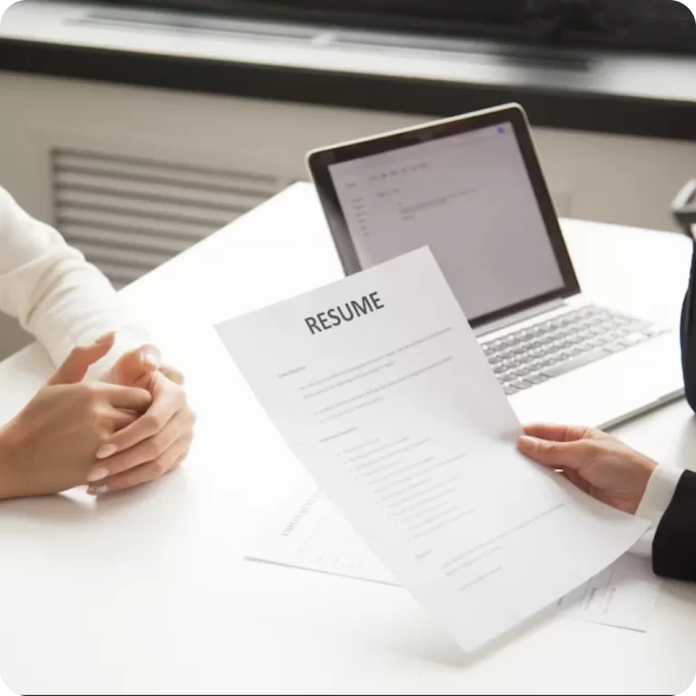

Feminin Force
Home
Artikel
Video
Ruang Karir
Komunitas
Tentang Kami
Kontak & Kerja sama
Profil
RUANG KARIR
“Tingkatkan Karir Anda: Memberdayakan Wawasan Perempuan”
Tips Personal Branding
Tips Menulis CV
Persiapan Wawancara
Strategi Work-Life Balance
LinkedIn / Romy N | 30 Maret 2023
8 Tips Wawancara : Membantu Wanita Lebih Menonjol di Keramaian
• 3 hari lalu

ProxsisGroup | 31 Maret 2023
Cara Jaga Basaha Tubuh Saat Wawancara Kerja
• 2 hari lalu
HBR / Dorie Clark | 30 Maret 2023
Kesalahan Fatal Saat Wawancara Menurut Pakar HRD
• 3 hari lalu

Kumparan.com | 30 Maret 2023
Pertanyaan Menjebak Saat Wawancara dan Cara Menjawabnya
• 3 hari lalu
WeAreTechWomen | 31 Maret 2023
Cara Mengatasi Gugup Saat Wawancara Kerja
• 2 hari lalu
LinkedIn / Romy N | 30 Maret 2023
Cara Negosiasi Gaji yang Benar dan Sopan Saat Wawancara Kerja
• 3 hari lalu
HBR / Dorie Clark | 30 Maret 2023
Sikap Saat Wawancara Kerja yang Harus Di Terapkan
• 3 hari lalu
Kumparan.com | 30 Maret 2023
Tips Memilih Pakaian Saat Wawancara Kerja
• 3 hari lalu